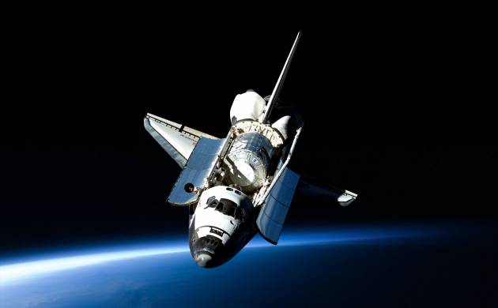
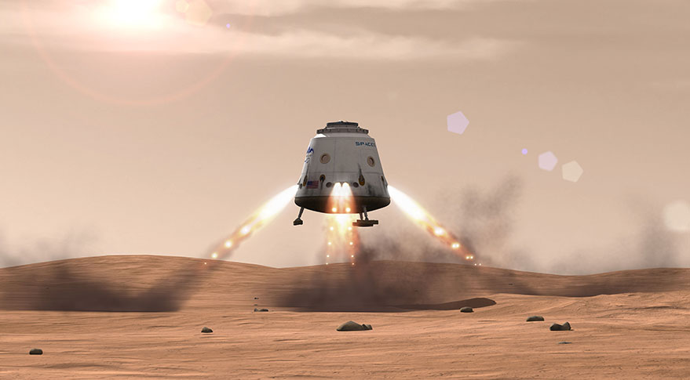
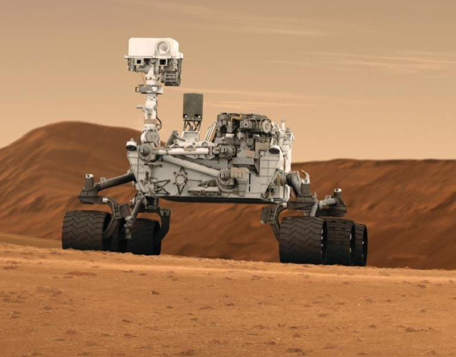
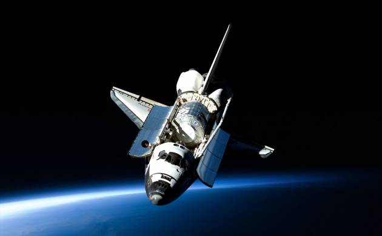
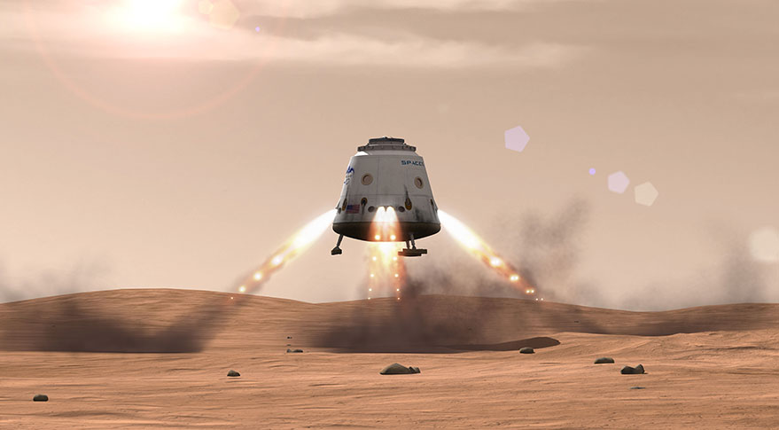
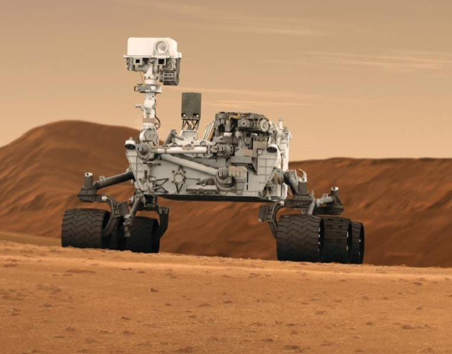

Mission Timeline
Launch
Cruise/Approach

Entry, Descent & Landing

Surface Mission

Cruise/Approach

Entry, Descent & Landing

Surface Mission

Mars is the fourth planet from the Sun and is the second smallest planet in the solar system. Named after the Roman god of war, Mars is also often described as the “Red Planet” due to its reddish appearance. Mars is a terrestrial planet with a thin atmosphere composed primarily of carbon dioxide.